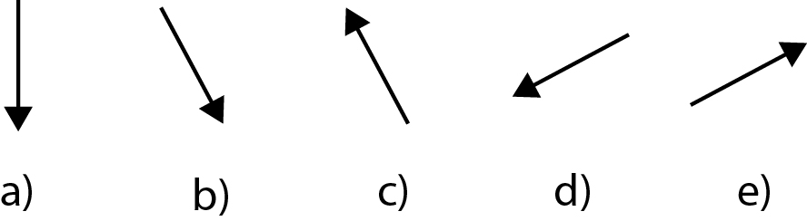

edX
WitsX Introduction to Physics
Problems: Inclines
Walkthrough Problem Part B
A block, with a mass of 10kg, is placed on top of an incline, with an angle of 30o, and begins to slip due to the absence of friction. Determine the acceleration at which the block will slide down the slope.

b) Now that we know what forces are present, let’s determine what direction these forces are acting in. Indicate the direction of each force:
i. the gravitational force

A
B
C
D
ii. the normal force
A
B
C
D
B
C
D